Integration Guide#
Dropbox SSO with Gluu Server#
This document is a step-by-step guide to setting up Dropbox SSO in Gluu Server.
This SSO requires setting a custom nameid called emailnid.
Custom NameID#
Please see this doc on how to create custom attributes.
The new attribute screen should look like the screenshot below 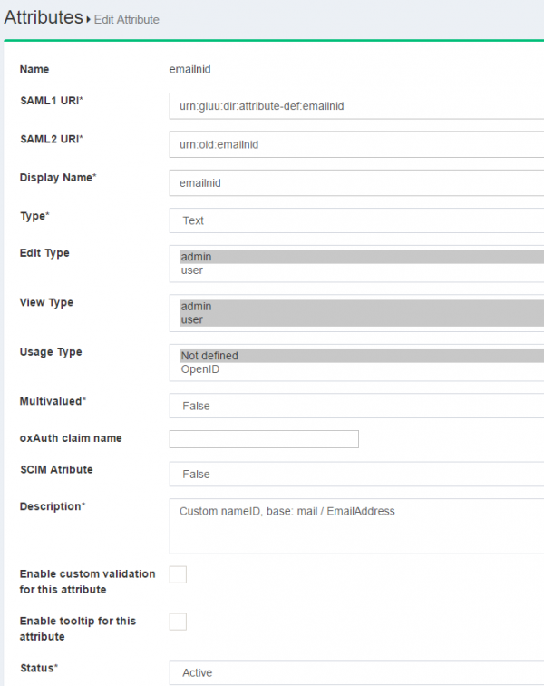
The custom nameid needs to be defined in the attribute-resolver template file.
-
Please edit the
attribute-resolver.xml.vmfile under the/opt/tomcat/conf/shibboleth2/idpfolder -
Add the
$attribute.name.equals('emailnid')with the existing #if( ! ($attribute.name.equals('transientId') to look like the snippet below
#if( ! ($attribute.name.equals('transientId') or $attribute.name.equals('emailnid') ) )
- Add
nameiddefinition
<resolver:AttributeDefinition id="emailnid"
xsi:type="Simple"
xmlns="urn:mace:shibboleth:2.0:resolver:ad"
sourceAttributeID="mail">
<resolver:Dependency ref="siteLDAP" />
<resolver:AttributeEncoder xsi:type="SAML2StringNameID"
xmlns="urn:mace:shibboleth:2.0:attribute:encoder"
nameFormat="urn:oasis:names:tc:SAML:1.1:nameid-format:emailAddress" />
</resolver:AttributeDefinition>
- Add
emailAddressin Principal Connector
<resolver:PrincipalConnector xsi:type="pc:Transient" id="saml2Transient" nameIDFormat="urn:oasis:names:tc:SAML:1.1:nameid-format:emailAddress" />
- Restart Tomcat service
Trust Relationship#
Please see this doc to create trust relationship and fill up the form with the following info
The metadata for Dropbox is necessary to create trust relationship. Please use the following snippet so create the dropbox_metadata.xml.
<EntityDescriptor entityID="Dropbox" xmlns="urn:oasis:names:tc:SAML:2.0:metadata">
<SPSSODescriptor protocolSupportEnumeration="urn:oasis:names:tc:SAML:2.0:protocol">
<NameIDFormat>urn:oasis:names:tc:SAML:1.1:nameid-format:emailAddress</NameIDFormat>
<AssertionConsumerService index="1" Binding="urn:oasis:names:tc:SAML:2.0:bindings:HTTP-POST" Location="https://www.dropbox.com/saml_login" />
</SPSSODescriptor>
</EntityDescriptor>
- Display Name: Dropbox
- Description: External SP / File method
- Metadata Type: File
- SP Metadata File: Upload the 'dropbox_metadata.xml' which you just created
- Configure Specific RelyiningParty: Yes
signResponses: conditional
signAssertions: never
signRequests: conditional
encryptAssertions: never
encryptNameIds: never
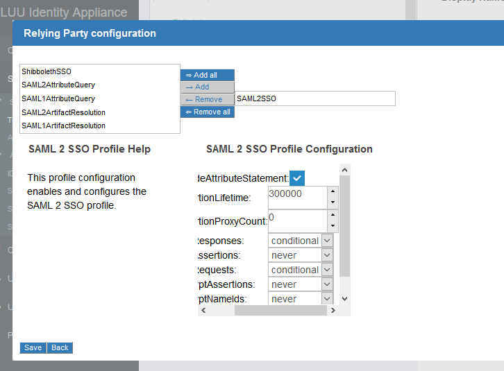
- Released attribute: emailnid 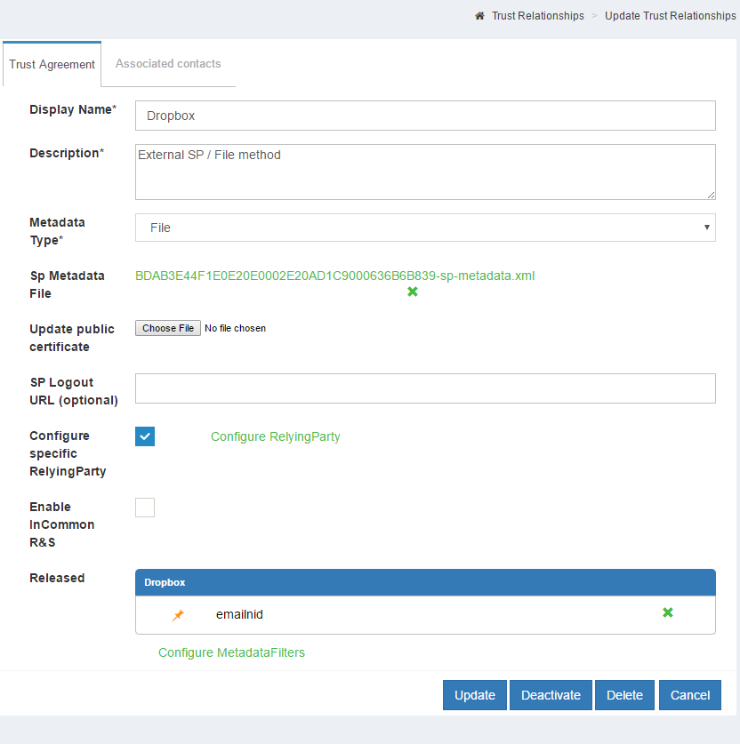
Configure Gluu Server as IdP in Dropbox#
- Log into Dropbox
- Click on
Admin Console - Click
Authentication - Click on the checkbox labeled
Enable single-sign-on -
Optional/Required according to necessity
-
Sign in URL
https://<hostname_of_Gluu_server>/idp/profile/SAML2/Redirect/SSO -
X.509 certificate
-
Get `shibIDP.crt` from Gluu Server `chroot` environment under `/etc/certs/` folder and upload it
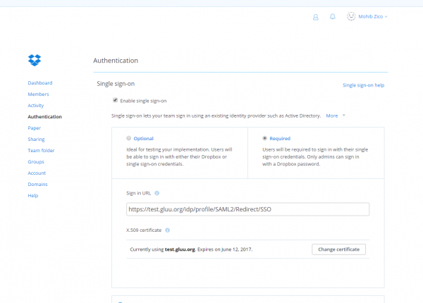
- Save configuration
Test SSO#
-
Please go to https://www.dropbox.com and click on the
Sign Inbutton -
If the account is configured for SSO, then a screen similar to the screenshot below will appear after entering the email address. 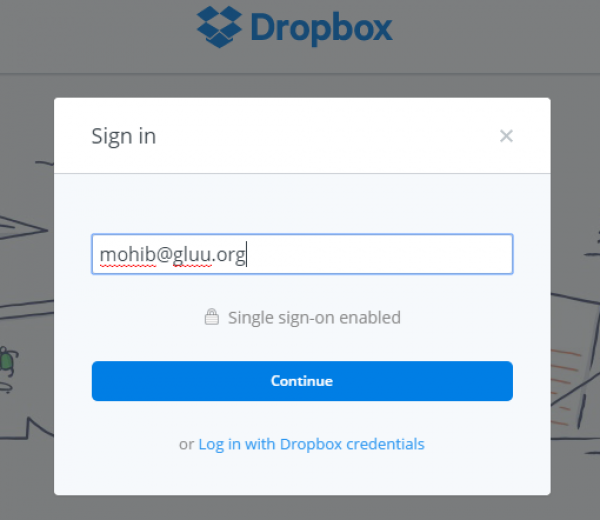
-
Click
Continueand the website will redirect to Gluu Server for authentication.
SAML SSO With Google Apps#
Google Apps will work as a Service Provider (SP) and we need to "introduce" Gluu Server with Google Apps as Gluu Server so that it can work as an Identity Provider (IDP).
NOTE: It is highly recommended to use Google staging apps setup before Google production migration. If you have any question or confusion, please feel free to let us know.
We need to configure Google Apps and Gluu Server so that both parties can talk to each other.
Configuring Google Apps With Google Dashboard:#
- Login to dashboard.
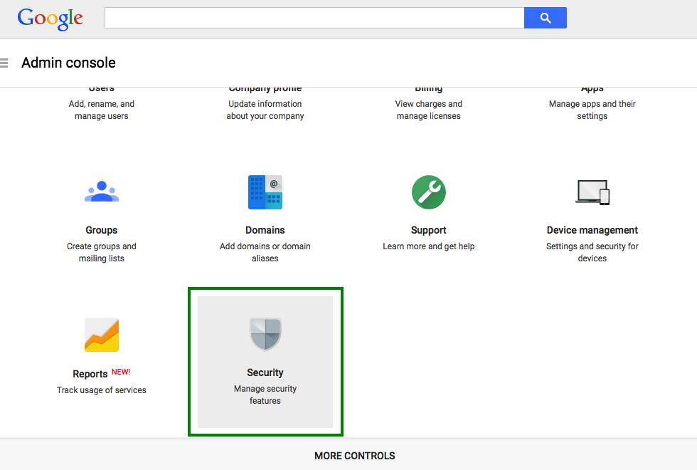
-
From the list of options choose the "Security" tab.
-
A new page will open. Select
Set up single sign-on(SSO)from the options.
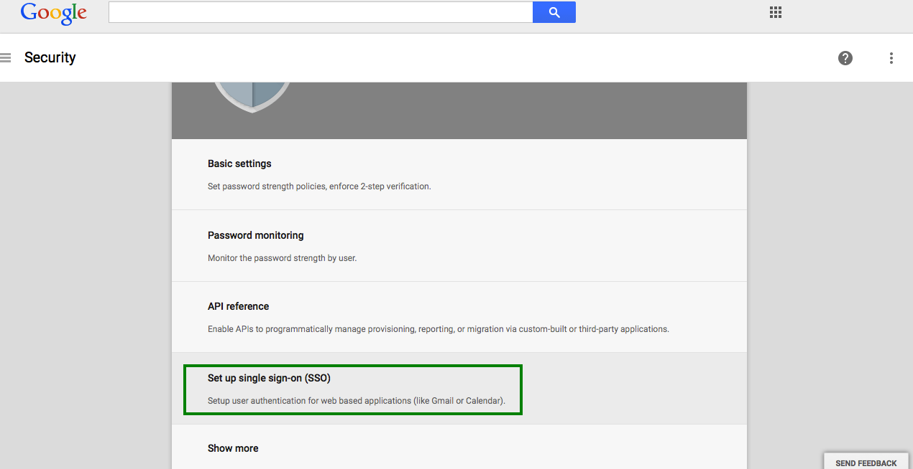
- Finally, the Single Sign-On setting page will appear.
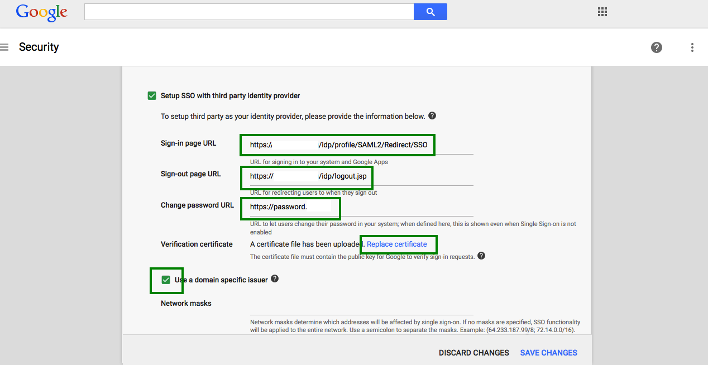
This page contains a number of selection, and entry fields.
-
Setup SSO with third party Identity Provider: This refers to your Gluu Server instance. Enable this box.
-
Sign-in Page URL: Enter the uri of the sign-in page, for example
https://idp_hostname/idp/profile/SAML2/Redirect/SSO. -
Sign-out Page URL: Enter the uri of the logout page, for example
https://idp_hostname/idp/logout.jsp. -
Change Password URL: The uri an user is redirected if he wants to change his password. It is recommended that an organization provides such a link for its end users.
-
Verification certificate: Upload the SAML certificate of your Gluu Server. The SAML certificates are available in the
/etc/certsfolder inside the Gluu Serverchrootenvironment. -
Use a domain specific issuer: Enable this box to use a domain-specific issuer.
-
Save your data using the
Save changesbutton on the lower right of the page.
If you want to know more about Google SSO, this helps you.
Configuration In Gluu Server:#
Now we need to create a Trust Relationship in Gluu Server. Trust Relationships are created so that the IdP can authorize/authenticate the user to the service provider (SP). In this specific case, the SP is Google Apps, and the protocol used is SAML.
In order to create a Trust Relationship, we need to grab the metadata of Google Apps. This metadata can be collected from Google. It's generally specific to an organization account. The following is a template of the Google metadata.
<EntityDescriptor entityID="google.com/a/domain.com" xmlns="urn:oasis:names:tc:SAML:2.0:metadata">
<SPSSODescriptor protocolSupportEnumeration="urn:oasis:names:tc:SAML:2.0:protocol">
<NameIDFormat>urn:oasis:names:tc:SAML:1.1:nameid-format:unspecified</NameIDFormat>
<AssertionConsumerService index="1" Binding="urn:oasis:names:tc:SAML:2.0:bindings:HTTP-POST"
Location="https://www.google.com/a/domain.com/acs" ></AssertionConsumerService>
</SPSSODescriptor>
</EntityDescriptor>
Got the metadata? Great, we are ready to move forward.
-
Create Trust Relationship for Google Apps:
-
How to create a trust relationship can be found here. We need to follow the "File" method for Google Apps trust relationship.
- Required attributes: Generally a nameID attributes is required.
- Relying Party Configuration: Yes, SAML2SSO should be configured.
- includeAttributeStatement: check
- assertionLifetime: default
- assertionProxyCount: default
- signResponses: conditional
- signAssertions: never
- signRequests: conditional
- encryptAssertions: never
- encryptNameIds: never
SAML SSO with Hobsons Education Solutions Co#
This guide has been prepared to connect the Hobsons Service Provider (SP) with the Gluu Server for SP-initiated SSO. The connection is established through the creation of a Trust Relationship using the Gluu Server UI, oxTrust.
Creating Trust Relationship#
-
Log in to your Gluu Server using your admin credentials.
-
Next, click on the SAML tab, and select the option Trust Relationships. Then, click on the
Add Relationshipbutton.
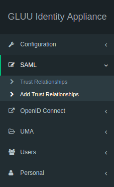
- The button
Add Relationshipwill open the following page, the trust relationship can be created easily using the following form.
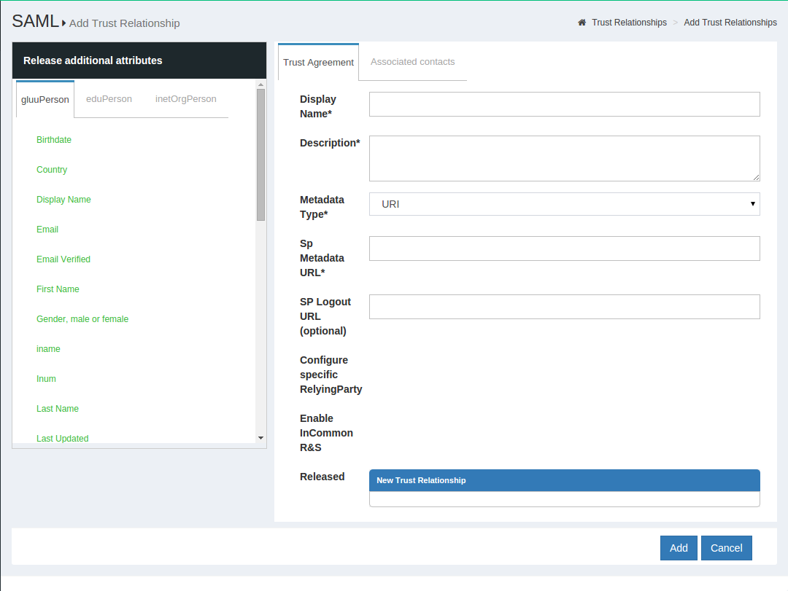
1. __Display Name__: This field contains the display name of the
Trust Relationship. In the example below we use “Test Hobsons-Radius TR”.
2. __Description__: A small description of Hobsons can be input here.
3. __Metadata Type__: Please select the uri from the dropdown menu.
4. __SP Metadata URL__: The metadata uri provided by Hobsons goes here.
5. __SP Logout URL__: This uri is meant to be supplied by the
Hobsons staff. If you did not receiv any logout uri yet, leave it blank.
6. __Released__: The two necessary attributes--`Transientid` and the
`eduPersonPrincipalName`--were selected from the attribute list.
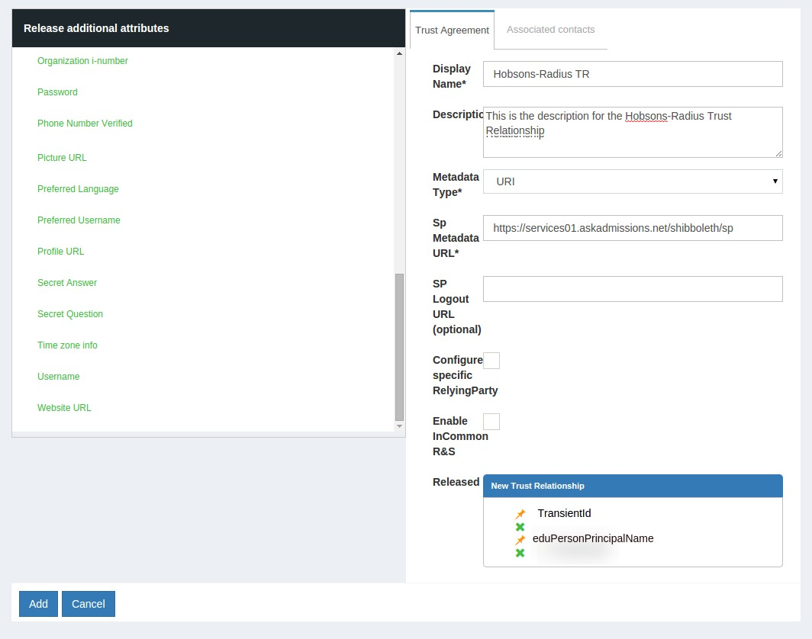
7. Finally, click "Add" to finish creating the Trust Relationship.
Configuring Trust Relationship#
Please ensure that the new Trust Relationship status is "active". Otherwise click on the Trust Relationship, and activate it before configuring it.
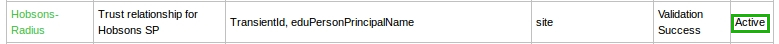
The configuration screen opens by clicking on the Hobsons Trust Relationship.
-
Configure Metadata Filters: Do not make any changes.
-
Configure specific Relying Party: Check this option and a link "Configure Relying Party" will appear.
-
Configure Relying Party: Click on the link, and a new window opens:
-
Select SAML2SSO from the list and click on the "Add" button.
-
Set "signResponses", "signAssertions", "signRequests" and "encryptAssertions" to
Conditionalfrom the drop-down menu. -
Set "encryptNameIds" to
Neverfrom the drop-down menu, and click "Save".
-
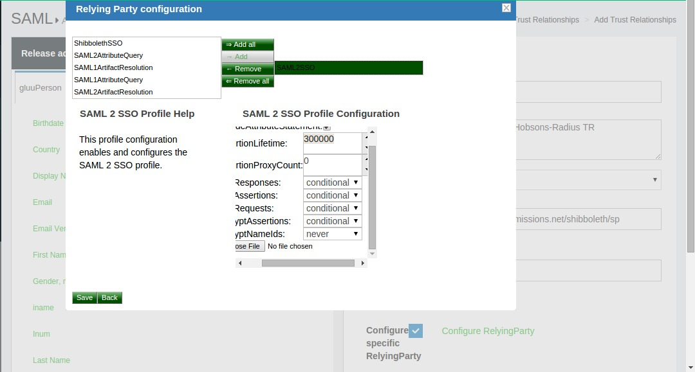
- Click "Update" to finish the configuration of the Trust Relationship.
OpenID Connect from JavaScript#
See OpenID Connect plugin for Passport for further details.
Office 365 Integration with Gluu Server#
This guide is created to use Microsoft Office 365 Single-Sign-On with Gluu Server. It is assumed that an Office 365 subscription is available/registered.
Note: The attributes ObjectGUID and IDPEmail are mandatory for O365 SSO. The domain of IDPEmail must match the registered domain as well.
Office 365 Configuration#
-
Please create a test user from Office365 Admin Panel
Alternatively, use this doc to connect backend Azure Active Directory (AD) -
Register the domain from the Office365 (O365) Admin Panel from Settings --> Domains
- Verify the domain
-
Register Gluu Server in O365
-
Install/Use Windows Server 2012 R2
-
Install and Configure Windows Powershell cmdlets
-
Create a script named
gluu1.ps1with the following template changing domain, hostname of Gluu Server and Certificate
-
Connect-MsolService
$dom = "company.org"
$url = "https://test.gluu.org/idp/profile/SAML2/POST/SSO"
$uri = "https://test.gluu.org/idp/shibboleth"
$logouturl = "https://test.gluu.org/idp/logout.jsp"
$cert = "Mx....SAML_cert_of_your_Gluu_Server...Tdsg9R0XO3AnBeHRtGmAA="
Set-MsolDomainAuthentication -DomainName $dom -FederationBrandName $dom -Authentication Federated -PassiveLogOnUri $url -SigningCertificate $cert -IssuerUri $uri -LogOffUri $logouturl -PreferredAuthenticationProtocol SAMLP
- Run the
gluu.ps1script from Windows Server 2012 R2
Gluu Server Configuration#
Custom Attributes#
The configuration begins by creating a few custom attributes named IDPEmail, ImmutableID and objectguid.
Please see this doc to create custom attributes.
-
IDPEmailCustom Attribute 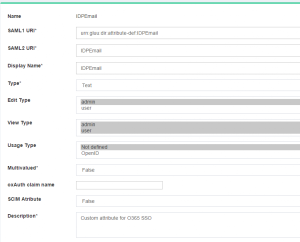 -
ImmutableIDCustom Attribute 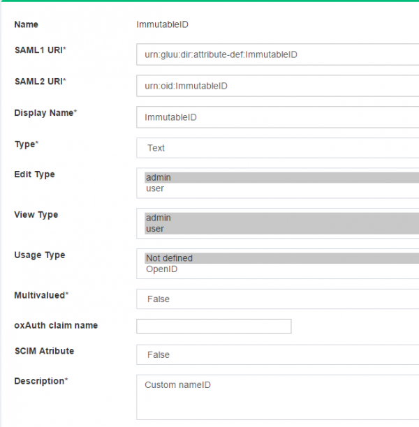 -
objectguidCustom Attribute 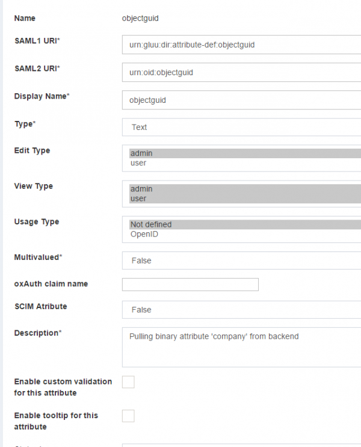
OpenDJ Configuration#
-
Edit the
100-user.ldiffile under/opt/opendj/config/schemafolder.-
Remove the
obhectGUIDentry from the file -
Add the following new entry
-
attributeTypes: ( 1454676848732 NAME 'objectGUID' SYNTAX 1.3.6.1.4.1.1466.115.121.1.5 USAGE userApplications X-ORIGIN 'gluu' )
* Restart OpenDJ
-
Edit the
attribute-resolver.xml.vmfile under/opt/tomcat/conf/shibboleth2/idpfolder- Add
$attribute.name.equals('ImmutableID')with the existing ($attribute.name.equals('transientId') to look like the snippet below
- Add
#if(!($attribute.name.equals('transientId')or$attribute.name.equals('ImmutableID')))
* Add `IDPEmail` attribute definition
<resolver:AttributeDefinition xsi:type="ad:Simple" id="UserId" sourceAttributeID="IDPEmail">
<resolver:Dependency ref="siteLDAP" />
<resolver:AttributeEncoder xsi:type="enc:SAML2String" name="IDPEmail" friendlyName="UserId" />
</resolver:AttributeDefinition>
* Add `ImmutableID` attribute definition
<resolver:AttributeDefinition id="ImmutableID" xsi:type="Simple"
xmlns="urn:mace:shibboleth:2.0:resolver:ad"
sourceAttributeID="objectguid">
<resolver:Dependency ref="siteLDAP"/>
<resolver:AttributeEncoder xsi:type="SAML2StringNameID"
xmlns="urn:mace:shibboleth:2.0:attribute:encoder"
nameFormat="urn:oasis:names:tc:SAML:2.0:nameid-format:persistent" />
</resolver:AttributeDefinition>
Identity Mapping#
The cache refresh mechanism is used to populate the Gluu Server LDAP with data from a backend LDAP/AD. The objectGUID attribute must be pulled from the backend data source to Gluu Server.
- Edit the
ox-ldap.properties,oxauth-ldap.propertiesandoxidp-ldap.propertiesfiles to add the following
binaryAttributes=objectGUID,objectguid
Note:'objectGUID' (the first one) is the attribute which contains binary values in the backend AD and 'objectguid' (the second one) is the Gluu Server binary attribute name which will pull value from 'objectGUID' attribute
- Restart Tomcat
Create Trust Relationship#
Please see this doc to create trust relationships.
- Configure Relaying Party like the following screenshot 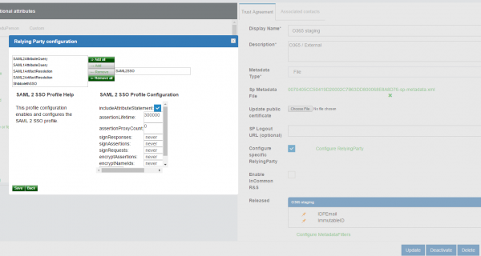
Login with LifeRay#
-
Server Bootup
- Once the LifeRay server is restarted, open your browser and
navigate to the uri
http://localhost:8080.
- Once the LifeRay server is restarted, open your browser and
navigate to the uri
-
Login uri
- Once the LifeRay page successfully loaded navigate to the OpenID
connect page at
http://localhost:8080/openidconnect/login.
- Once the LifeRay page successfully loaded navigate to the OpenID
connect page at
Note: you can edit the theme code, and link to the login uri as
http://localhost:8080/openidconnect/login. In result the user will
always redirect to the OAuth server for authentication.
- OAuth authentication
- The LifeRay login uri will redirect users to the OAuth IdP server for user authentication. Internally, passing the oAuth client id as the following screen:

- Request for permission
- This screen can be configured depending upon your OAuth Server implementation.

- OAuth callback (user auto-login to LifeRay)
- After a successful authentication with the OAuth server, IdP will send a callback to LifeRay with a specific code as a parameter:
http://localhost:8080/openidconnect/callback?code=xxx`
This will be intercepted by our oxAuth LifeRay plugin. Upon validation of the token with the Gluu IdP, it will result in a login of the user to the LifeRay. The user will be redirected to his respective start page.

SAML SSO with Salesforce.com#
By default Salesforce suggest deployers to implement IDP-initiated SSO. The initialization of IDP-initiated SSO is little bit complex as it requires a big hostname which includes IDP's SSO link as well as SP's login uri. So we prefer SP-initiated SSO and here in this documentation we are presenting a very simple SP-initiated SSO steps with Salesforce and Gluu Server. Still, you can go for IDP-initiated SSO if you prefer. Further documentation is available at the Salesforce.com site.
Prepare Salesforce.com#
- Log into Salesforce.com with your administrative account.
- Click on Setup in the right upper corner of the page.
- You need to add a custom domain name for your Salesforce.com site if you do not have any yet.
- Go to Domain Management –> My Domain
- Add your custom domain
- Wait for some time. Salesforce.com will register this domain name
for you. As an example we use
testgluu-dev-ed.my.salesforce.comhere.
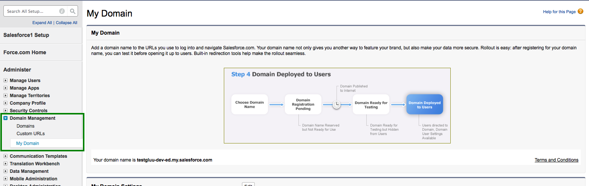
- Register your Gluu Server information in Salesforce.com
- Go to Security Controls –> Single Sign On Settings
- Click New
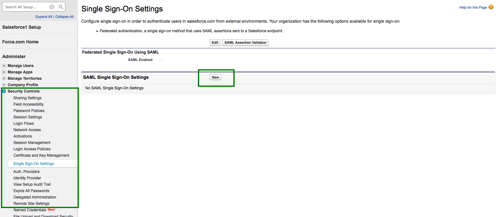
-
Now you need to add the information of your Gluu Server here
- Name: Anything, whichever is easier for you to recognize this
setup, i.e.
Gluu Server - API Name: Gluu Server.
- Issuer: EntityID of your Gluu Server, i.e.
https://test.gluu.org/idp/shibboleth - EntityID: Your Salesforce.com custom domain name as chosen
above, i.e.
https://testgluu-dev-ed.my.salesforce.com - Identity Provider Certificate: Grab your Gluu Server's SAML certificate. SAML certificate can be grabbed from your Gluu Sever's metadata. Save the certificate and upload it.
- Request Signing Certificate: Default certificate
- Request Signature Method: RSA-SHA1
- Assertion Decryption Certificate: Assertion not encrypted.
- SAML Identity Type: Assertion contains user's Salesforce.com username
- SAML Identity Location: Identity is in an Attribute element
- Attribute Name: Provide 'SAML2 URI' of your attribute. For our test case we are using Gluu Server's Email attribute. How to check the information of your attribute is available here.
- NameID Format: Leave this field empty.
- Identity Provider Login URL:
https://test.gluu.org/idp/profile/SAML2/Redirect/SSO - Service Provider Initiated Request Binding: HTTP-Redirect
- Here is how our example setup looks like:

- Name: Anything, whichever is easier for you to recognize this
setup, i.e.
Prepare Gluu Server#
- How to create SAML trust relationship is available here.
- Grab Salesforce.com metadata from the Salesforce.com website. There is an option named 'Download Metadata':
- Modify Salesforce.com metadata a bit:
- Remove AuthnRequestsSigned=“true” from metadata.
- Save metadata
- Create Trust Relationship:
- Display Name: Anything, whichever is easier for you to recognize this trust relationship.
- Description: Anything, whichever is easier for you to recognize this trust relationship
- Metadata Type: 'File'
- Upload salesforce's metadata (your modified one)
- Releases attributes: TransientID and Email
- 'Add' this trust
- Configure Specific Relying: It can be done from Gluu Server's GUI (named: oxTrust)
- Select 'SAML2SSO'
- includeAttributeStatement: Enabled
- assertionLifetime: keep the default one
- assertionProxyCount: keep the default one
- signResponses: conditional
- signAssertions: never
- signRequests: conditional
- encryptAssertions: never
- encryptNameIds: never
- Save it
- Select 'SAML2SSO'
- 'Update' the trust relationship
- Here is how it looks like in our example setup:
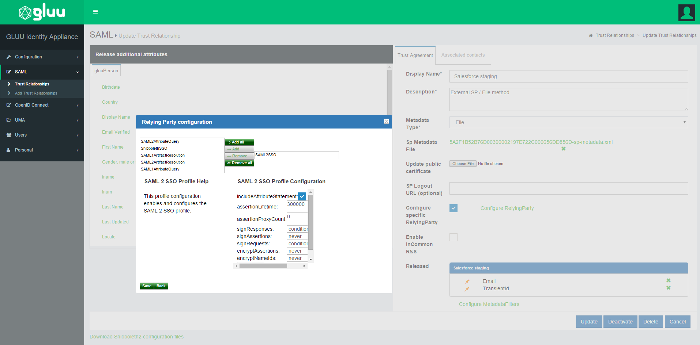
Test SSO#
- Go back to Salesforce.com setup
- Security Controls –> Single Sign On Settings
- Enable 'Federated Single Sign-On Using SAML'
- Go to 'Domain Management'
- Configure 'Authentication Configuration'
- Select 'Gluu Server'
- Save it
- Here is how the 'Authentication Configuration' looks like:

-
This is SP-initiate SSO. So hit your Salesforce.com website link to initiate the SSO.
-
Here is a video link of this SSO.
Cisco WebEx SSO#
Attribute creation with oxTrust#
- 'WebexNameID'
- Name: webexnameid
- SAML1 URI: urn:gluu:dir:attribute-def:webexnameid
- SAML2 URI: urn:oid:webexnameid
- DisplayName: WebexNameID
- Type: Text
- Edit Type: admin
- View Type: admin + user
- Usage Type: Not definte
- Multivalue: False
- SCIM Attribute: False
- Description: Custom nameID for WebEx, takes value from uid (through Shibboleth's config files)
- 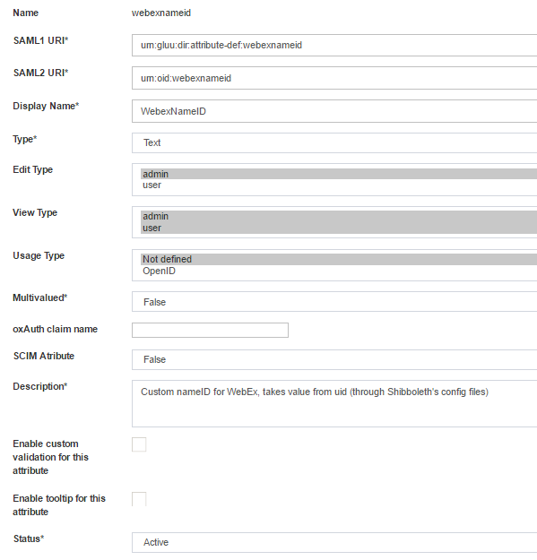
- 'wxemail'
- Name: email_webex
- SAML1 URI: email
- SAML2 URI: email
- DisplayName: wxemail
- Type: Text
- Edit type: admin
- View type: admin + user
- Usage type: Not defined
- Multivalue: False
- SCIM Attribute: False
- Description: Custom attribute for WebEX SSO. Pulling email from backend.
- 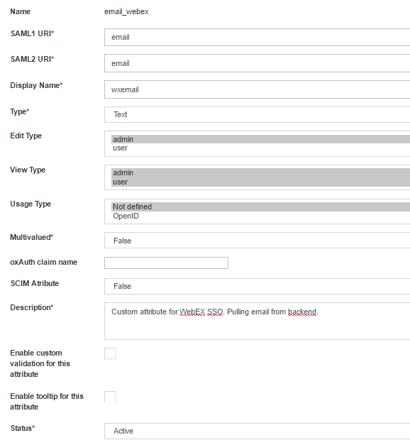
- 'wxfirstname'
- Name: firstname_webex
- SAML1 URI: firstname
- SAML2 URI: firstname
- Display Name: wxfirstname
- Type: Text
- Edit Type: admin
- View Type: admin + user
- Usage Type: Not defined
- Multivalued: False
- SCIM Attribute: False
- Description: Custom attribute for WebEX SSO, pulling 'givenname' from backend.
- 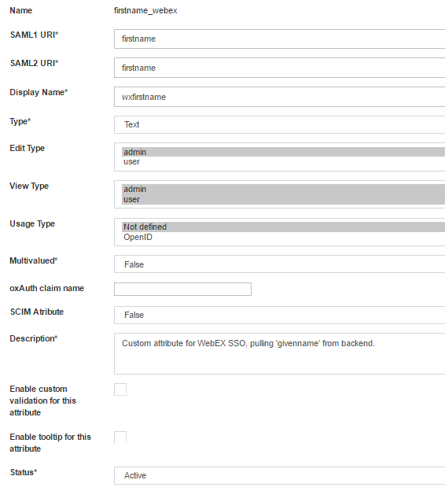
- 'wxlastname'
- Name: lastname_webex
- SAML1 URI: lastname
- SAML2 URI: lastname
- Display Name: wxlastname
- Type: Text
- Edit Type: admin
- View Type: admin + user
- Usage Type: Not defined
- Multivalued: False
- SCIM Attribute: False
- Description: Custom attribute for WebEX SSO, pulling 'sn' from backend.
- 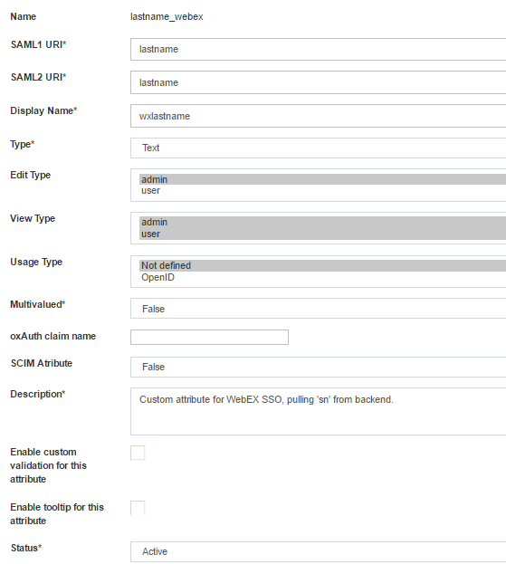
- 'wxuid'
- Name: uid_webex
- SAML1 URI: uid
- SAML2 URI: uid
- Display Name: wxuid
- Type: Text
- Edit Type: admin
- View Type: admin + user
- Usage Type: Not defined
- Multivalue: False
- SCIM Attribute: False
- Description: Custom attribute for WebEX SSO, pulling 'uid' from backend.
Configuring attribute resolver#
Add below snippets in 'attribute-resolver.xml.vm' ( location: /opt/tomcat/conf/shibboleth2/idp )
- Attribute definition:
#if( ! ($attribute.name.equals('transientId') or $attribute.name.equals('webexnameid') or $attribute.name.equals('webexnameidmail') or $attribute.name.equals('firstname_webex') or $attribute.name.equals('uid_webex') or $attribute.name.equals('lastname_webex') or $attribute.name.equals('email_webex') ) )
- Attribute declaration:
<resolver:AttributeDefinition xsi:type="ad:Simple" id="firstname_webex" sourceAttributeID="firstname_webex">
<resolver:Dependency ref="siteLDAP" />
<resolver:AttributeEncoder xsi:type="enc:SAML2String" nameFormat="urn:oasis:names:tc:SAML:2.0:attrname-format:unspecified" name="firstname" />
</resolver:AttributeDefinition>
<resolver:AttributeDefinition xsi:type="ad:Simple" id="uid_webex" sourceAttributeID="uid_webex">
<resolver:Dependency ref="siteLDAP" />
<resolver:AttributeEncoder xsi:type="enc:SAML2String" nameFormat="urn:oasis:names:tc:SAML:2.0:attrname-format:unspecified" name="uid" />
</resolver:AttributeDefinition>
<resolver:AttributeDefinition xsi:type="ad:Simple" id="lastname_webex" sourceAttributeID="lastname_webex">
<resolver:Dependency ref="siteLDAP" />
<resolver:AttributeEncoder xsi:type="enc:SAML2String" nameFormat="urn:oasis:names:tc:SAML:2.0:attrname-format:unspecified" name="lastname" />
</resolver:AttributeDefinition>
<resolver:AttributeDefinition xsi:type="ad:Simple" id="email_webex" sourceAttributeID="email_webex">
<resolver:Dependency ref="siteLDAP" />
<resolver:AttributeEncoder xsi:type="enc:SAML2String" nameFormat="urn:oasis:names:tc:SAML:2.0:attrname-format:unspecified" name="email" />
</resolver:AttributeDefinition>
<resolver:AttributeDefinition id="webexnameid"
xsi:type="Simple"
xmlns="urn:mace:shibboleth:2.0:resolver:ad"
sourceAttributeID="uid">
<resolver:Dependency ref="siteLDAP" />
<resolver:AttributeEncoder xsi:type="SAML2StringNameID"
xmlns="urn:mace:shibboleth:2.0:attribute:encoder"
nameFormat="urn:oasis:names:tc:SAML:1.1:nameid-format:unspecified"/>
</resolver:AttributeDefinition>
- Restart tomcat